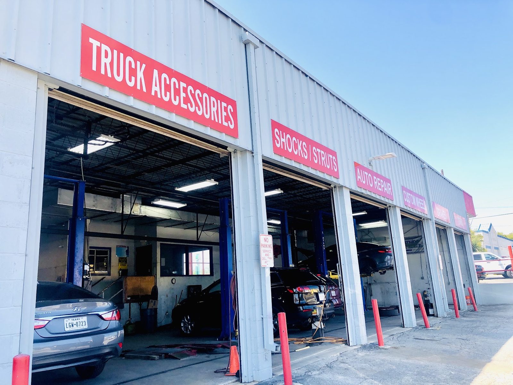

Multi-point inspection
San Antonio, TX
- Checked
- Watch
- Fix now
Auto repair · San Antonio, TX
Honest car repair, on San Pedro Ave
Friendly staff, mechanics who know their stuff, and clear explanations before any work starts.

- Shop
- Surgo Automotive
- Rating
- 4.7/ 5
- Signed off by
- 433Google reviews
- Call
- (726) 268-5866
- Oil changes
- Inspections
- Diagnostics
- Repairs
- Parts installation
- San Antonio, TX
Systems we check
What we do
Oil changes, inspections, diagnostics and repairs.
- Checked
- Watch
- Fix now
-
Checked
Oil changes
Quick oil changes, with a clear word on what your car needs next.
-
Checked
Vehicle inspections
Full inspections with a clear explanation of what we find.
-
Checked
Diagnostic testing
Including full evap system inspections, with photos of good and bad components kept as a record.
-
Checked
Repairs
Honest repairs to get your car back on the road.
-
Checked
Aftermarket parts installation
We install parts you bought elsewhere. Call to ask about yours.
-
Checked
Shocks and struts
Call and tell us how the car is riding.

The shop
Family-owned, right here with you
Family-owned, open Monday to Friday.
Kind, patient staff. A written diagnosis you can come back to. Clear communication from front desk to mechanic.
- ExplainedWe walk you through what we find.
- DocumentedPhotos of good and bad parts, kept on file.
- KindStaff treat people with patience and zero judgment.
Photos
Inside the shop


Signed off
Postcards from customers
4.7 / 5 from 433 Google reviews
Note
Had the best experience with Surgo he did a full inspection on our evap system & really appreciated the detail they took into doing a full diagnostic test. They also took pictures of all good and bad components of my vehicle to build a profile I can always come back to if I ever feel like something is wrong. I appreciate the compassion and full breakdown of everything with my vehicle .
Note
Was I crying when I walked into Surgo Automotive? Maybe. Did the entire staff - front desk, owner, and mechanic - handle it with kindness, patience, and zero judgment? Absolutely. They were clear, communicative, and thorough through a complicated situation. Diagnosis was well-documented, work came in on budget, and the problem is fixed. Am I the drama? Not anymore. Nothing left to be dramatic about.
Note
I would definitely recommend this automotive shop! I went in for a long-overdue oil change, and the team went above and beyond by providing a complimentary vehicle inspection. They took the time to explain the issues they found and helped me understand what maintenance my car needs moving forward.
Note
This is the best Shop I've Ever Been to. i went to 4 different shops and none of them could install the aftermarket parts that I got from Amazon and the best part is the owner is great and the mechanics know their stuff definitely recommend coming here if you want your car to get professional worked on
Note
Surgo automotive did a great job in repairing our vehicle, getting it back on the road. We want to thank everyone who worked on our chevy Malibu. 👍👍 We would recommend Surgo automotive to everyone. 10+ stars. …
Find us
Find the shop
6446 San Pedro Ave, San Antonio, TX 78216
Look for the red Surgo Automotive sign and the open bay doors on San Pedro Avenue.
Hours
- Mon
- 7:30 AM–6 PM
- Tue
- 7:30 AM–6 PM
- Wed
- 7:30 AM–6 PM
- Thu
- 7:30 AM–6 PM
- Fri
- 7:30 AM–6 PM
- Sat
- Closed
- Sun
- Closed